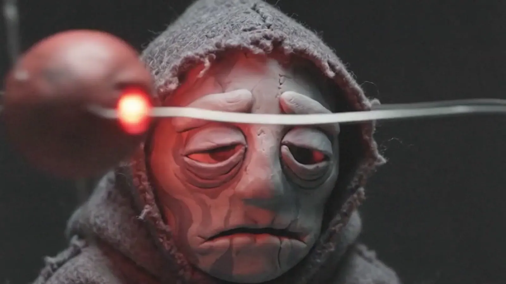
KP-26-01 · ámbar Reproducir · 3:09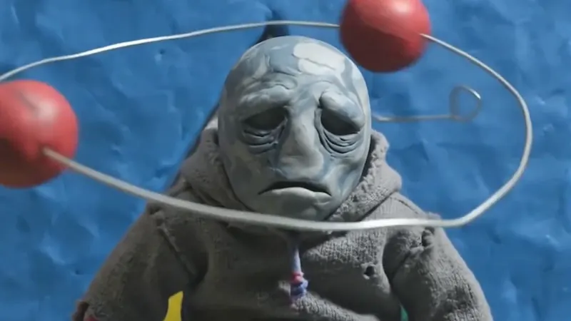
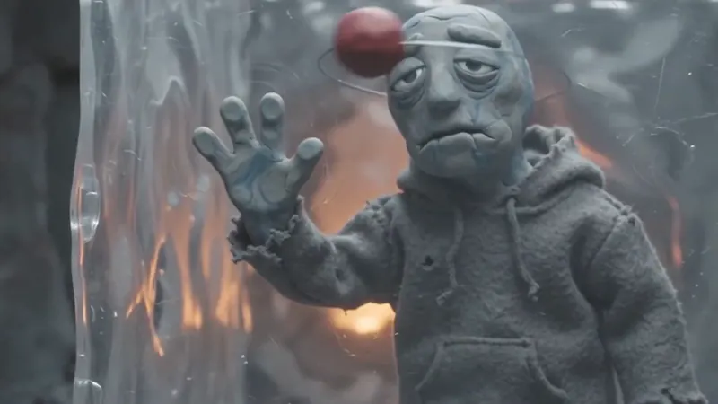
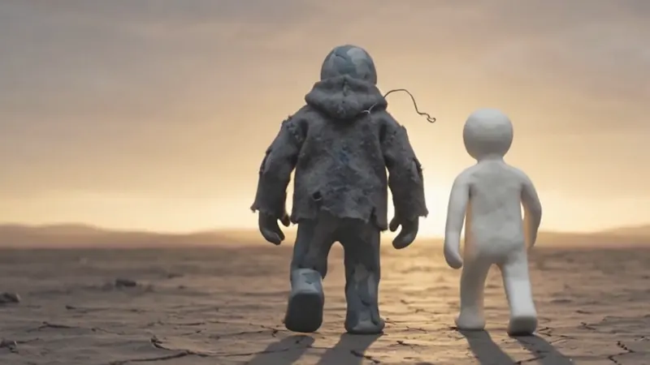
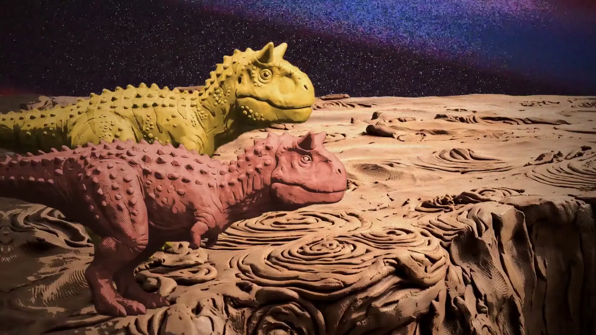
Tres videoclips en plastilina para el disco Antimeme. Dirección y edición de Ariel Hernán Contini.
Patagonia argentinaTres piezas de animación experimental en plastilina para Antimeme, el disco de Koprolitos. Cada video está presentado como una muestra extraída de un estrato distinto, articulando texturas de arcilla, iluminación escénica y animación cuadro a cuadro.

KP-26-01 · ámbar Reproducir · 3:09


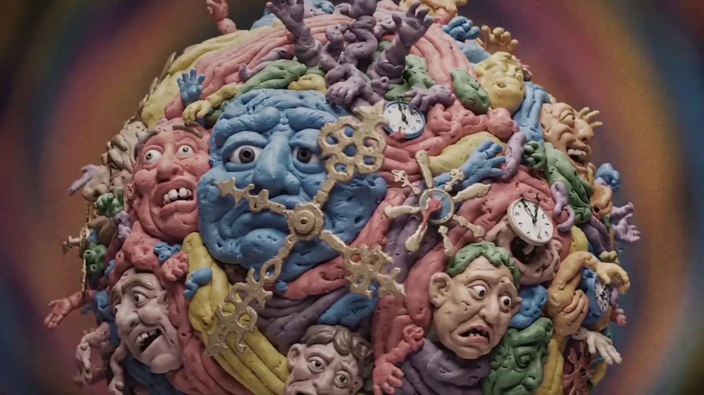
KP-26-02 · azurita Reproducir · 2:58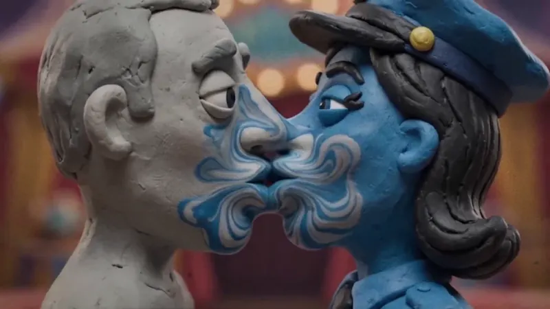
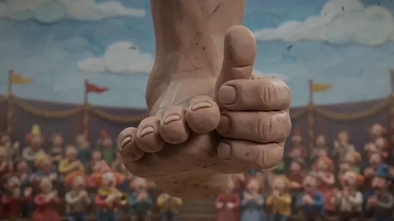
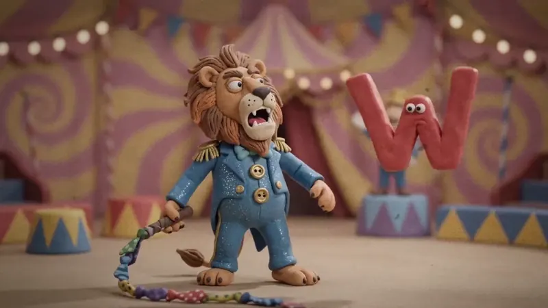
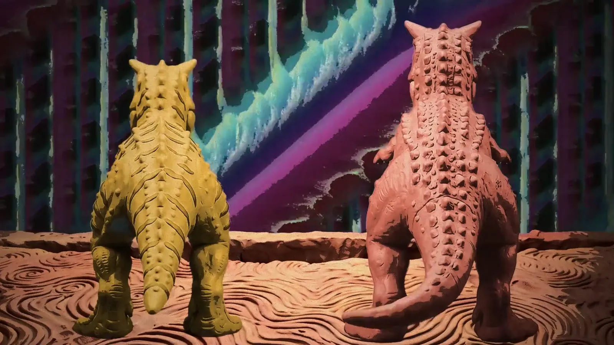
KP-26-03 · hematita Reproducir · 2:18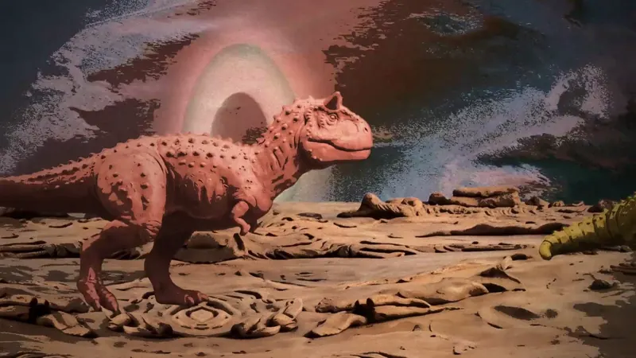
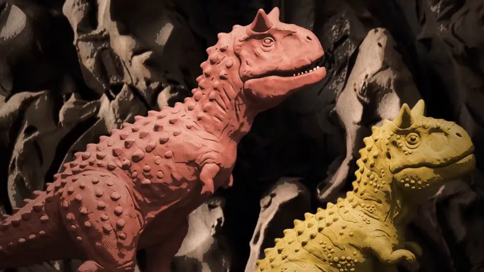
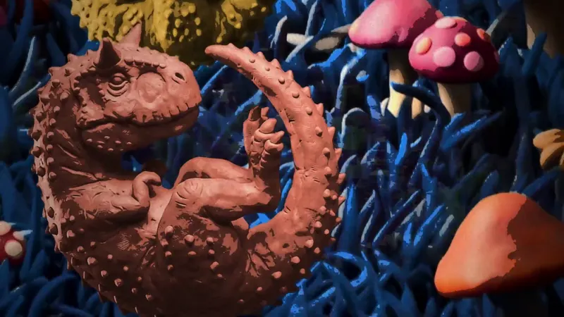
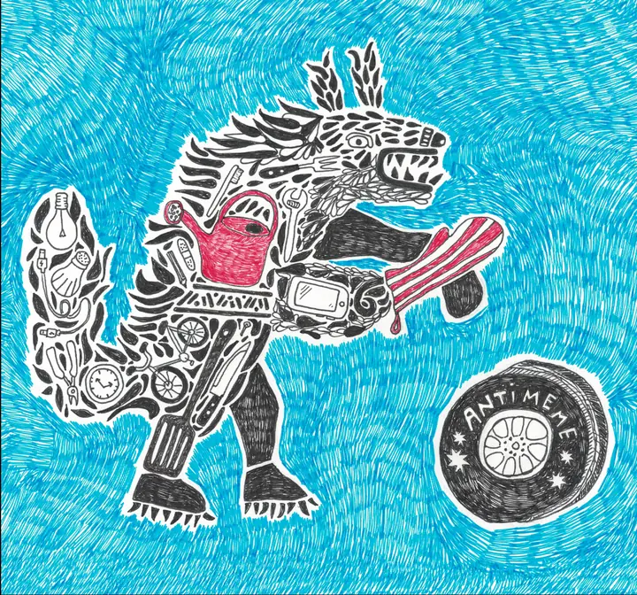
Los tres videos acompañan canciones de Antimeme, el disco de Koprolitos. Cada video lleva el nombre de su canción.
Integrantes℗ Escalera circular
Las tres piezas se produjeron durante 2026 mediante síntesis visual generativa y animación cuadro a cuadro. La búsqueda estética hace foco en la materialidad táctil —huellas de modelado en la plastilina, fibras de lana y arcilla agrietada— sosteniendo la coherencia de cada personaje y atmósfera hasta el corte final.
Desarrollo visual de texturas, modelado y lenguaje escénico para cada universo.
Continuidad de planos, sincronía musical y colorimetría en la edición final.